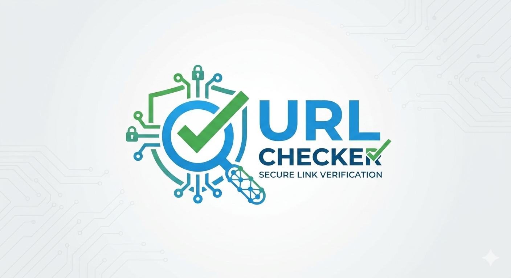
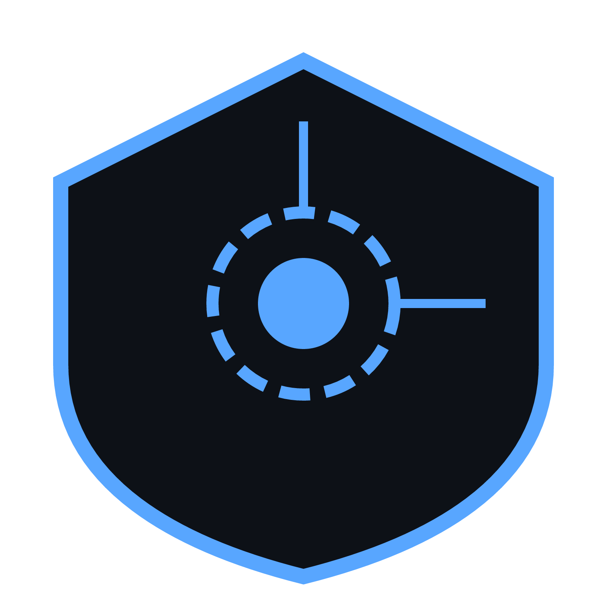
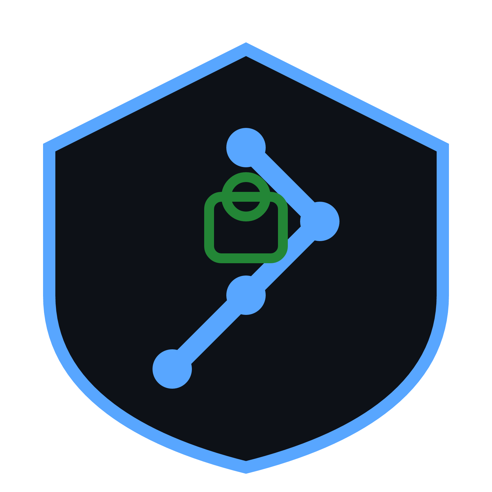
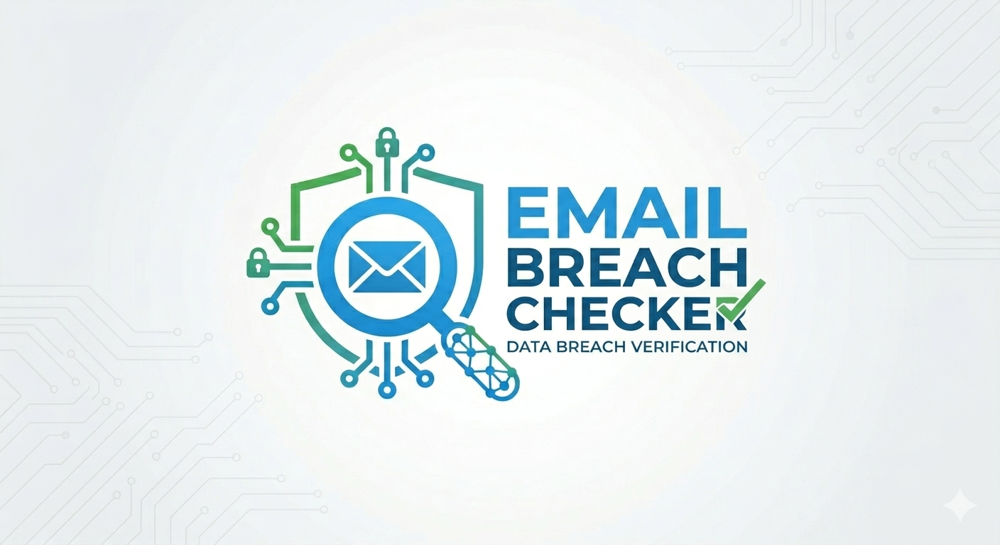
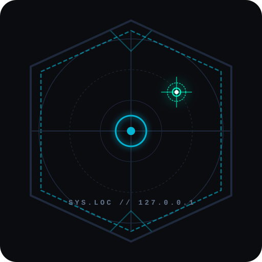
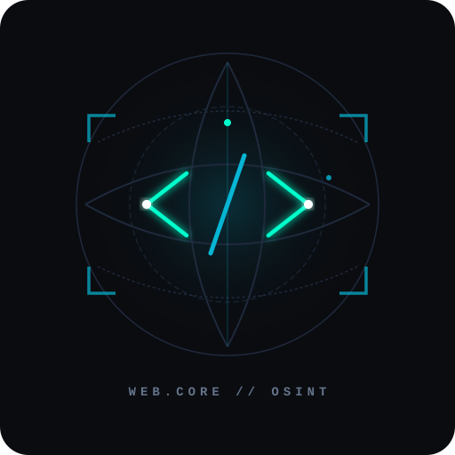
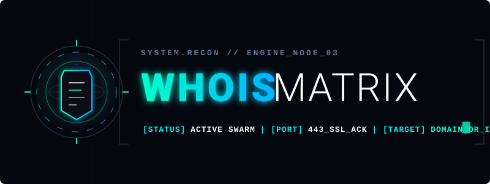

Verify before you click
Reputation checks and technology fingerprinting give you a reason to trust or distrust a link before you interact with it.
Systems online 9 reconnaissance modules active
Proactive protection and real-time threat intelligence at your fingertips. Audit infrastructure, trace threat actors and hunt for exposed credentials from a single console.
Arsenal
Each module targets a distinct layer of the attack surface, from URL reputation to domain ownership records.

Cross-references any URL or domain against Google's live Safe Browsing databases to surface phishing, malware and malicious infrastructure.
Run check Installable
AI-assisted deep research on CVEs, threat actors and TTPs using GROQ and live search intelligence.
Research AI powered
Generates week-by-week security roadmaps with curated courses, videos and platforms for a target role or certification.
Build roadmap AI powered
Audits an email address or username against aggregated breach archives to surface exposed credentials and their source breaches.
Audit identity OSINTResolves an IP or domain into ISP, country, region, city, coordinates and an interactive map of the hosting node.
Locate target Recon
Automatically profiles your own connection: IPv4 and IPv6, autonomous system, ISP, proxy and VPN status, plus a live map.
Scan my network Installable
Fingerprints web technologies: CMS platforms, JavaScript libraries, web servers, frameworks, versions and security headers.
Fingerprint target Recon
Registration records for domains and addresses: registrar, creation and expiry dates, status flags, nameservers and SSL certificate state.
Trace ownership OSINTA wider library of cybersecurity tools, guides and reference material maintained alongside this hub.
Browse library ReferenceCapabilities
Reputation checks and technology fingerprinting give you a reason to trust or distrust a link before you interact with it.
Breach archives, WHOIS records and GeoIP data reveal which of your accounts or assets are visible to an attacker.
Documentation and generated roadmaps turn findings into concrete remediation steps and a learning path.
The URL Checker and My IP modules ship as an installable progressive web app for Chrome on desktop and mobile, and as a browser extension that brings both scans into the address bar. Setup instructions live in the extension repository.